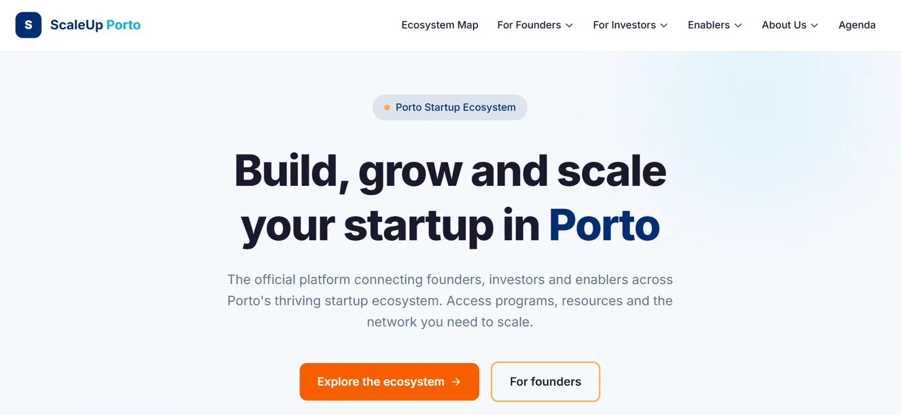
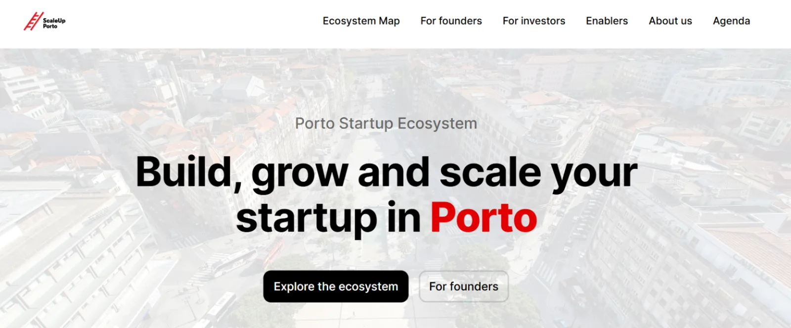
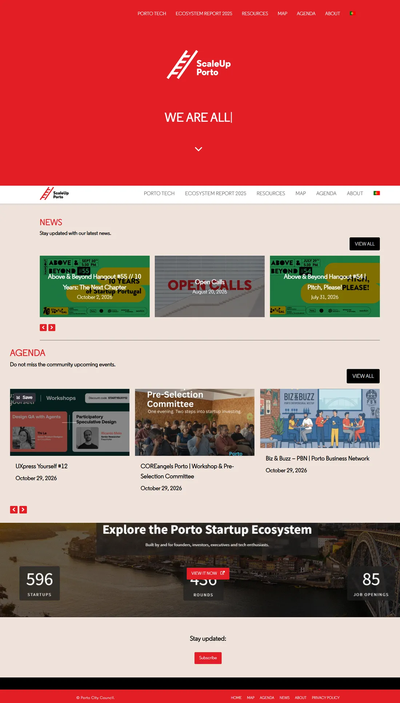
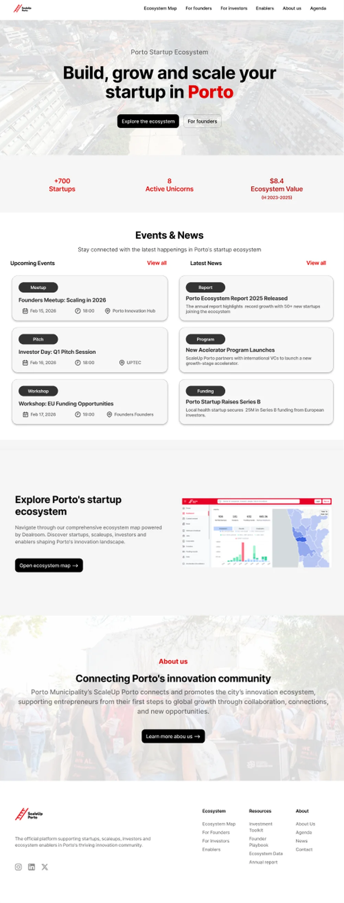

Caso de estudio · UX/UI y gestión de proyecto
De las necesidades del ecosistema a un diseño listo para construir: analicé qué necesitaba la web, definí sus funcionalidades, propuse la tecnología y diseñé la interfaz.
ScaleUp Porto es la iniciativa de la división de emprendimiento del Ayuntamiento de Oporto que apoya el ecosistema de startups y scaleups de la ciudad. Necesitaba una web nueva que sirviera de referencia oficial para fundadores, inversores, enablers y público internacional.
La información del ecosistema estaba fragmentada y la web debía funcionar como plataforma, no como una web corporativa. Además tenía que ser fácil de entender, crecer con el tiempo sin rediseñarse y permitir que el equipo de comunicación la actualizase sin depender de desarrolladores.
Estudié qué necesitaba cada audiencia y comparé los tipos de CMS (tradicionales, headless, en la nube y generadores estáticos), con sus ventajas y límites para un contexto institucional.
Definí los objetivos y las funcionalidades clave: menú fijo con mega-menús, navegación por etapas para fundadores, toolkit modular para inversores, mapa del ecosistema, y secciones de eventos, noticias y enablers gestionadas desde el CMS. Con una home ligera que actúa de puerta de entrada.
Propuse una arquitectura desacoplada: un CMS headless para gestionar el contenido y un frontend ligero, alojados en infraestructura institucional. Comparé opciones (WordPress, Strapi, Directus) con criterios claros: control, mantenimiento, velocidad, seguridad y autonomía del equipo.
Para validar la dirección rápido, generé un primer diseño de la home con v0 y lo usé para alinear al equipo antes de invertir tiempo en el diseño final.
Llevé el diseño a Figma aplicando la nueva identidad visual de marca, con navegación responsive y tarjetas dinámicas para eventos y noticias.
La primera versión seguía el criterio de requisitos (azul como base y naranja para las acciones). En Figma el diseño pasó a la identidad propia de ScaleUp Porto: rojo y negro, con una imagen de la ciudad en la cabecera, más cercano a la marca.


A la izquierda, la web de ScaleUp Porto antes del cambio. A la derecha, el diseño que propuse. Recorre cualquiera de los dos marcos y el otro se mueve a la vez.


Desliza dentro del marco · El diseño usa contenido de ejemplo.